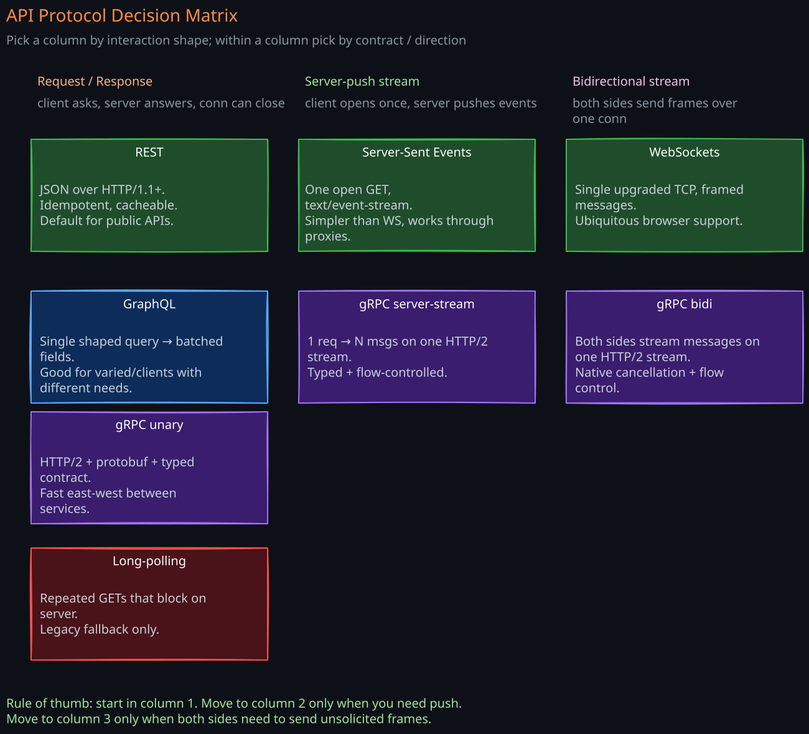
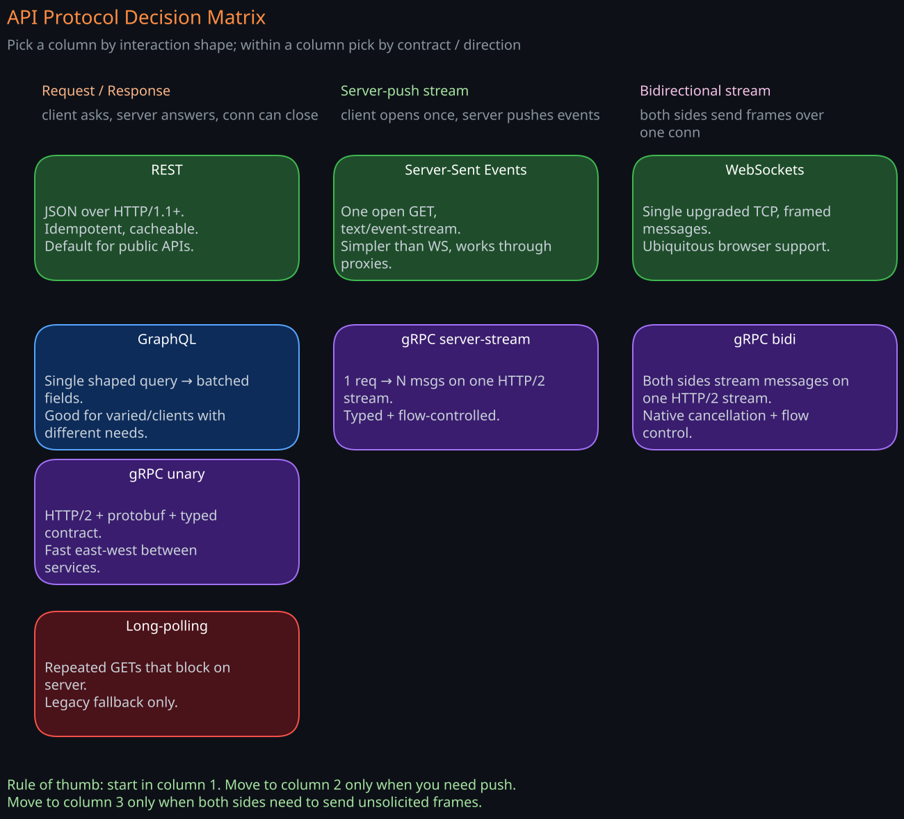

API Protocols Compared — REST, gRPC, GraphQL, WebSockets, SSE, Long-Polling
The “API protocol” decision is really three decisions bundled together:
- Shape of interaction: request/response, streaming, pub/sub, bidirectional.
- Wire format: text vs binary, schema vs schemaless.
- Operational fit: tooling, caching, observability, client ecosystem.
There is no universally best choice. A staff engineer should be able to argue any of these into or out of a design based on the workload and the deployment realities.
1. The Six Patterns at a Glance
| Pattern | Shape | Wire | Schema | Direction | Typical use |
|---|---|---|---|---|---|
| REST (HTTP/JSON) | Request/response | Text (JSON) | Loose (OpenAPI optional) | Client → Server | Public APIs, CRUD |
| gRPC | Request/response + streams | Binary (Protobuf) | Strict (.proto) | Either, including bidi | Internal RPC, polyglot services |
| GraphQL | Request/response (single endpoint) | Text (JSON, often over HTTP POST) | Strict (SDL) | Client → Server | Aggregating multiple backends for a UI |
| WebSockets | Bidirectional persistent | Binary or text frames | Application-defined | Both | Chat, multiplayer, live collaboration |
| Server-Sent Events (SSE) | Server → Client stream over HTTP | Text | None | Server → Client | Live feeds, progress, notifications |
| Long-Polling | Pseudo-push over HTTP | Text/JSON | None | Server → Client | Last-resort fallback |


2. REST (HTTP + JSON)
2.1 What It Actually Is
REST in the wild is “JSON over HTTP with resource-shaped URLs and verbs.” Pure Fielding-style REST (HATEOAS, hypermedia) is rare. The deployed pattern is:
- Resources at URLs:
/users/42/orders - Verbs: GET, POST, PUT, PATCH, DELETE
- JSON bodies
- HTTP status codes for outcomes
- Optional OpenAPI/Swagger schema for client generation
2.2 Strengths
- Universal client support —
curl, every browser, every language. - Plays naturally with HTTP infrastructure: caching (
Cache-Control, ETag), proxies, CDNs, WAFs, auth headers. - Debuggable by humans. Logs, dumps, replays.
- No schema lock-in — easy to evolve loosely.
- Maps cleanly onto resource thinking, which is how product teams already model domains.
2.3 Weaknesses
- Verbose on the wire (JSON keys repeated per record).
- No streaming or push without bolt-ons (SSE, WebSockets).
- Loose schemas make breaking changes easy to ship by accident; consumers find out in production.
- N+1 problem: a UI that needs user + orders + items pays 3 round trips. GraphQL exists for this exact pain.
- No native bidirectional streaming.
2.4 When to Choose REST
- Public-facing API.
- CRUD-shaped domain.
- Mixed client ecosystem you don’t control.
- Strong existing HTTP caching strategy.
- Most internal services where simplicity dominates.
3. gRPC
For the full deep-dive — protobuf wire format, the four streaming patterns, schema evolution rules and the buf breaking CI gate, deadlines and cancellation, the L4 LB trap, gRPC-Web and the browser problem, production architecture, and when not to use gRPC — see the dedicated gRPC-RPC note. This section is the comparison view.
3.1 What It Is
A binary RPC framework over HTTP/2. Service contracts live in .proto files; code is generated for every supported language (40+). Four call shapes: unary, server streaming, client streaming, bidirectional streaming.
3.2 Strengths
- Binary Protobuf is 3-10x smaller and far faster to parse than JSON.
- Strong schemas with forward/backward compatibility rules built in.
- Built-in code generation for clients and servers in every major language.
- HTTP/2 multiplexing under the hood; one connection serves many concurrent calls.
- First-class streaming in all four directions.
- Deadlines and cancellation propagate through the call tree.
3.3 Weaknesses
- Not browser-friendly without gRPC-Web (which loses some streaming modes and requires a proxy).
- HTTP/2 + binary makes debugging harder.
grpcurl, Wireshark Protobuf dissectors, and good telemetry are mandatory. - Protobuf evolution rules are easy to break (changing a field type, reusing a tag) — needs CI checks (
buf breaking). - HTTP infrastructure (CDNs, WAFs, browser caches) does not understand gRPC traffic.
- Schema sharing across teams is a real coordination problem; treat
.protofiles as products.
3.4 When to Choose gRPC
- Internal service-to-service in a polyglot environment.
- Performance-sensitive (mobile clients on cellular, low-CPU devices).
- You need bidirectional streaming and do not want WebSockets’ DIY framing.
- You have the engineering maturity to manage schemas as a product.
3.5 gRPC and Service Meshes
gRPC’s long-lived HTTP/2 connections expose a common pitfall: L4 load balancers stick all requests from a client to one backend pod because they balance connections, not requests. You need an L7-aware proxy (Envoy, Linkerd, gRPC’s own client-side LB with xDS) to distribute requests across pods. This is one of the strongest reasons teams adopt a service mesh. The dedicated gRPC note walks through the failure mode and the three production fixes.
4. GraphQL
For the full deep-dive — schema and SDL, execution model, N+1 + DataLoader, persisted-query caching, field-level auth, query cost attacks, federation, and operational concerns — see the dedicated GraphQL note. This section is the comparison view.
4.1 What It Is
A query language plus a single HTTP endpoint. The client specifies exactly which fields it wants; the server returns precisely that shape. Three operation types:
- Query: read
- Mutation: write
- Subscription: stream of updates (usually over WebSockets)
4.2 Strengths
- Eliminates over-fetching and under-fetching: the UI asks for what it renders. Critical when bandwidth matters (mobile).
- One round trip for composed views: user + orders + items in a single query.
- Strong schema (SDL) used for tooling, introspection, type-safe client codegen.
- Schema as a federation point: Apollo Federation, GraphQL Mesh let multiple teams contribute pieces of a single graph.
- Good for BFF (Backend-for-Frontend): the graph collapses many downstream services for the UI.
4.3 Weaknesses
- Caching is hard: every query is a POST to one URL. HTTP cache doesn’t help out of the box. You either bolt on Apollo client cache or implement query hashing.
- Resolver fan-out / N+1 on the server: each field can hit a different backend.
DataLoaderbatching is mandatory; without it a single query melts the DB. - Performance ceiling is whatever the slowest resolver does — one bad field on a complex query hurts everyone.
- Authorization is per-field, which is harder than per-endpoint and easier to get wrong.
- Query complexity attacks: a malicious client requests a deeply nested query that explodes server-side. Need cost analysis and depth limits.
- Operational tooling is still maturing compared to REST.
4.4 When to Choose GraphQL
- Multiple client UIs (web, iOS, Android) with different data needs.
- A BFF aggregating many backend services for a single product surface.
- A product where dropping over-fetching meaningfully improves page load.
4.5 When Not to Choose GraphQL
- Pure CRUD where REST endpoints map 1:1 to operations.
- High-throughput service-to-service (gRPC is faster and simpler).
- Strong HTTP caching is required.
5. WebSockets
5.1 What It Is
A persistent, full-duplex connection started by an HTTP Upgrade handshake on port 443. After the upgrade, framing is binary or text messages; the protocol is whatever the application defines on top.
5.2 Strengths
- True bidirectional: server can push at any time without client polling.
- Low per-message overhead after handshake (2–14 byte frame headers).
- Browser-native — no plugin.
- Survives most middleboxes because it looks like HTTPS.
5.3 Weaknesses
- No request/response semantics — you build IDs and matching yourself.
- No multiplexing — one connection per logical channel unless you build a sub-protocol (most apps do).
- Stateful: a sticky connection to a specific server makes scaling fan-out a real problem. You need a pub/sub backbone (Redis pub/sub, NATS, Kafka) to route messages between WebSocket terminators.
- Reconnection logic is the app’s job — backoff, resumption, message replay.
- No native compression negotiation beyond per-message deflate.
- Auth is awkward: you can’t set headers in the browser WebSocket API beyond
Sec-WebSocket-Protocol. Most teams pass a token in the URL or do an auth message immediately after connect.
5.4 When to Choose WebSockets
- Chat (WhatsApp), collaborative editing (Google Docs).
- Multiplayer games.
- Live dashboards with two-way control.
- Trading and finance UIs where the server pushes ticks.
5.5 Scaling Pattern
The canonical architecture:
- Many lightweight terminators (Node, Go, Erlang) accept WebSocket connections.
- Each terminator subscribes to a pub/sub bus for the topics its connected clients care about.
- Outbound messages are routed via the bus, not direct between terminators.
- State (presence, last-seen) lives in Redis or a dedicated store.
6. Server-Sent Events (SSE)
6.1 What It Is
A simple text protocol over a long-lived HTTP/1.1 or HTTP/2 response. The server keeps the response open and emits framed events:
data: {"price": 42.10}
id: 1234
event: tick
data: {"price": 42.11}
id: 1235
The client uses the EventSource browser API; the server is just an HTTP endpoint that flushes.
6.2 Strengths
- Just HTTP — no upgrade, no special infrastructure. Works through every proxy.
- Auto-reconnection is built into
EventSource, withLast-Event-IDfor resumption. - Text protocol, trivial to debug.
- Native browser support.
- Works fine with HTTP/2 multiplexing — many SSE streams can share one connection.
6.3 Weaknesses
- One-way only (server → client). For client → server, fall back to a normal POST.
- Text-only (UTF-8). Binary needs base64, which inflates size.
- HTTP/1.1 connection limit of 6 per origin bites you fast. HTTP/2 fixes this.
- Buffering proxies can break it — must set
Cache-Control: no-cacheandX-Accel-Buffering: nofor nginx. - No standardized client outside browsers — Node, mobile, etc., need third-party libraries.
6.4 When to Choose SSE
- One-way notifications (LLM token streaming, build logs, progress bars, live price ticks).
- You want the simplicity of HTTP with push semantics.
- You don’t need bidirectional or binary.
6.5 SSE vs WebSockets in 2026
SSE has had a renaissance because LLM APIs (OpenAI, Anthropic) standardized on it for token streaming. For “server streams events, client only needs to send the initial request,” SSE is almost always simpler than WebSockets.
7. Long-Polling
The OG hack: client sends a request, server holds it open until either an event happens or a timeout fires, then responds. Client immediately reconnects.
7.1 Why It Existed
Before WebSockets/SSE, there was no way to push from server to client through HTTP. Long-polling simulates it.
7.2 Why It Still Exists
- Universal compatibility — every HTTP intermediary supports it.
- Transport fallback inside libraries like Socket.IO and SignalR: try WebSocket → fall back to SSE → fall back to long-polling.
- Strict corporate firewalls that drop everything not request/response.
7.3 Costs
- One request per event: doubles RTT load relative to a persistent connection.
- Connection churn on the server.
- State on the server to remember “this client is parked waiting for room 7.”
Today: use long-polling only as a fallback, not a primary design.
8. Decision Framework
Walk through these in order:
-
Is the interaction one-shot request/response?
- Public/external → REST.
- Internal polyglot, performance-sensitive → gRPC.
- UI aggregating many backends → GraphQL.
-
Is it server-pushed only?
- SSE if HTTP-only environment is acceptable.
- gRPC server-streaming if you’re already on gRPC.
-
Is it bidirectional?
- WebSockets (browser clients).
- gRPC bidirectional streaming (server-to-server or native clients).
-
Is the client outside your control (browser, mobile app, partner)?
- REST or GraphQL most likely. Avoid gRPC unless you have gRPC-Web ready.
-
Do you need HTTP caching, CDN distribution, WAF protection?
- REST with cacheable GETs. Other patterns require bespoke or no caching.
-
What’s your operational maturity?
- REST has the lowest cliff. gRPC and GraphQL require schema discipline, telemetry, and dedicated tooling.
9. Common Pitfalls
- gRPC over an L4 LB: all requests pin to one pod because connections are long-lived. Use L7 LB or client-side LB.
- GraphQL without DataLoader: a single query causes N+1 fanout to the DB. Add batching from day one.
- GraphQL without query cost limits: a malicious query melts the server. Add max depth and complexity scoring.
- WebSocket auth in the URL: tokens leak into proxy logs and browser history. Prefer an auth message immediately post-connect, or use a short-lived signed token.
- SSE through a buffering proxy: events queue invisibly. Set explicit no-buffer headers and test through the full ingress path.
- REST without idempotency keys for mutations: retries on flaky networks double-create resources. Add
Idempotency-Keyheaders. - Protobuf field reuse: removing a field and reusing its tag number silently corrupts data for old clients. Use
reservedkeywords.
10. Related Notes
- API-Design — REST design principles, idempotency, versioning
- API-Gateway — protocol translation often happens here
- HTTP-1-2-3 — underlying transport for all of these
- WhatsApp, Google Docs — WebSocket-shaped problems
- Service mesh — solves gRPC L7 LB and cross-language mTLS
Revision Summary
- REST/JSON wins on universality, debuggability, and HTTP-native caching. Default for public APIs and CRUD.
- gRPC wins on performance and schema discipline for internal polyglot services; needs L7 LB to scale.
- GraphQL wins for multi-client UIs aggregating many backends; pay with caching and query-cost complexity.
- WebSockets are the canonical browser bidirectional channel; scaling requires a pub/sub backbone and careful auth.
- SSE is the cheapest server-push that works everywhere — perfect for LLM token streaming, live feeds.
- Long-polling is a fallback only — useful inside transport libraries, never as a primary choice.
Deep Understanding Questions
- You front a gRPC service behind an AWS Network Load Balancer. As traffic grows, one pod’s CPU pegs at 100% while others sit at 5%. Diagnose, then list two architectural fixes.
- A GraphQL endpoint exposes
user(id) { orders { items { name } } }. With 1,000 users, 50 orders each, 10 items each, what is the worst-case DB query count without DataLoader, and what is it with DataLoader? What is the time complexity in each case? - Compare WebSockets vs SSE for a live chat product. List four properties WebSockets bring that SSE cannot, and decide whether they’re worth the operational cost for a chat with 10K concurrent users.
- A REST API ships
POST /paymentswithout idempotency keys. A mobile client retries on transient 502s. Walk through the production incident this causes and the minimal protocol change to prevent it. - Why does GraphQL break the typical CDN caching model that REST enjoys, and what is the standard mitigation when you want CDN caching for a GraphQL API?
- A team picks gRPC for their public mobile API. Six months later they regret it. Enumerate three concrete problems they will hit that REST or GraphQL would not have.
- SSE became the de facto LLM token-streaming protocol. Why SSE instead of WebSockets — list three specific properties of SSE that fit the LLM use case better.
- Your WebSocket fleet has 200 terminator pods and 5M concurrent connections. Two users in the same chat room land on different pods. Describe the pub/sub topology that routes a message between them and where the failure modes live.